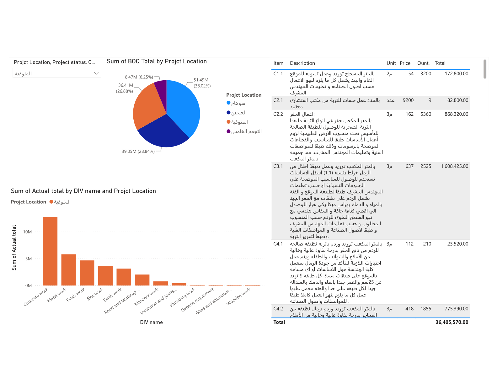
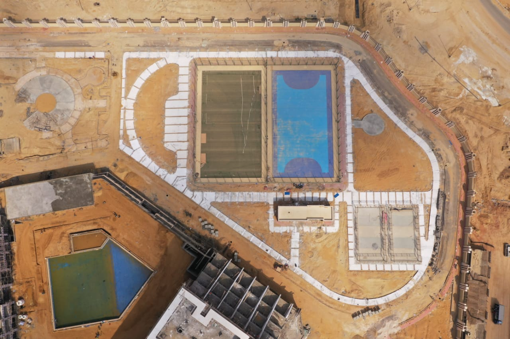
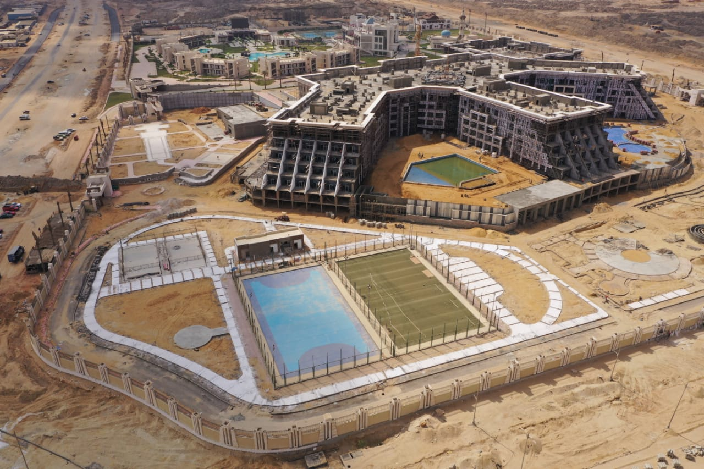
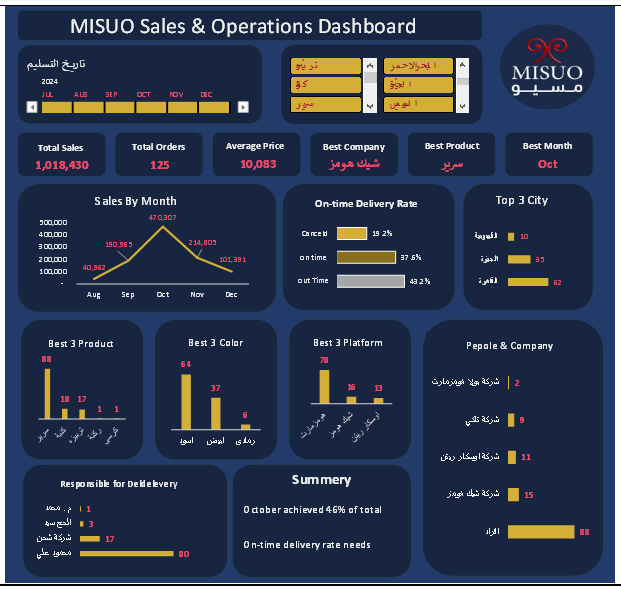

الرياض، السعودية
Healthcare
الرياض، السعودية
Healthcare
مجمع مستشفى وعيادات الأورام التخصصية - الرياض
إدارة المكتب الفني وضبط المشروع بالكامل: بناء الجدول الزمني P6 وتوزيع الموارد، إعداد واعتماد المخططات التنفيذية الطبية المعقدة (C.T Scan, MRI, غرف العزل، محطات التمريض، الأسقف الطبية المعلقة)، وبناء ميزانية الصفر ونموذج Power BI لمراقبة التكاليف.
 العاصمة الإدارية الجديدة، مصر
Compound & Mega Resort
العاصمة الإدارية الجديدة، مصر
Compound & Mega Resort
مشروع كمبوند بالعاصمة الإدارية الجديدة
إدارة تنفيذ مشروع فندقي وسكني سياحي متكامل بمواصفات عالمية: مباني غرف وأجنحة فاخرة، بحيرات صناعية ومسابح أولمبية، ملاعب رياضية، مسطحات خضراء شاسعة ومبنى اجتماعي، مع التنسيق بين مقاولي الأعمال الكهروميكانيكية والتشطيبات الفاخرة.
 الطائف، السعودية
Healthcare
الطائف، السعودية
Healthcare
قسم الأورام - مستشفى الملك سعود التخصصي بالطائف
مراجعة شاملة لجدول الكميات ومستندات العقد، واكتشاف الثغرات التعاقدية ومخاطر التكاليف، وإعداد تحليل التكاليف غير المباشرة (Indirect Analysis) وتوزيعها الزمني، وفحص فجوة التدفق النقدي، وإعداد الجدول الزمني المتكامل للأعمال الإنشائية والتشطيبات الطبية.

العلمين، التجمع، المنوفية، سوهاج Multi-Site Portfolioمحفظة مشروعات شركة دليل الهدى الإنشائية
إدارة وتوجيه التخطيط وضبط التكاليف عبر عدة مشاريع في وقت واحد (العلمين بقيمة 39M، سوهاج بقيمة 51.5M، أسوار المنوفية بقيمة 36.4M، وماونتن فيو التجمع الخامس بقيمة 8.5M). بناء لوحات Power BI لمتابعة بنود المقايسات ومستخلصات مقاولي الباطن.

العاصمة الإدارية الجديدة، مصر Sports & Equestrianمبنى الجيم والإسطبل الأولمبي للخيول - العاصمة الإدارية
الإشراف على تنفيذ وتشييد منشآت رياضية وفروسية متخصصة بمعايير أولمبية: صالات لياقة بدنية متطورة، مضامير تدريب، عنابر إيواء الخيول بمعايير تهوية وأمان خاصة، وشبكات صرف وتغذية تحتية.

الغردقة، البحر الأحمر Resort Hospitalityمشروع إنشاء فندق بالغردقة
تنفيذ الأعمال الإنشائية والتشطيبات المعمارية لمنتجع فندقي ساحلي، شمل الشاليهات السكنية والخدمات الترفيهية وحمامات السباحة، مع ضمان مقاومة المباني للعوامل الساحلية والرطوبة العالية.
إنشاء طريقين في دمياط (طريق أسفلت وطريق خرساني بميناء دمياط)
الإشراف على أعمال الطرق وتثبيت طبقات الأساس لطريق دمياط - عزبة البرج، وتنفيذ طريق خرساني متطور بميناء دمياط لتحمل أوزان الحاويات والشاحنات الثقيلة، وضبط جودة واختبارات المواد والخرسانة المسلحة.

Business Intelligence Data Analyticsمنظومة ذكاء العمليات والمبيعات (MISUO BI Dashboard)
تصميم وبناء لوحة تحكم تشغيلية متكاملة تتابع مؤشرات كفاءة التوريد، نسب التسليم في الوقت المحدد (On-time Delivery Rate)، تحليل أداء المنصات والشركات، وتحديد الاختناقات اللوجستية.